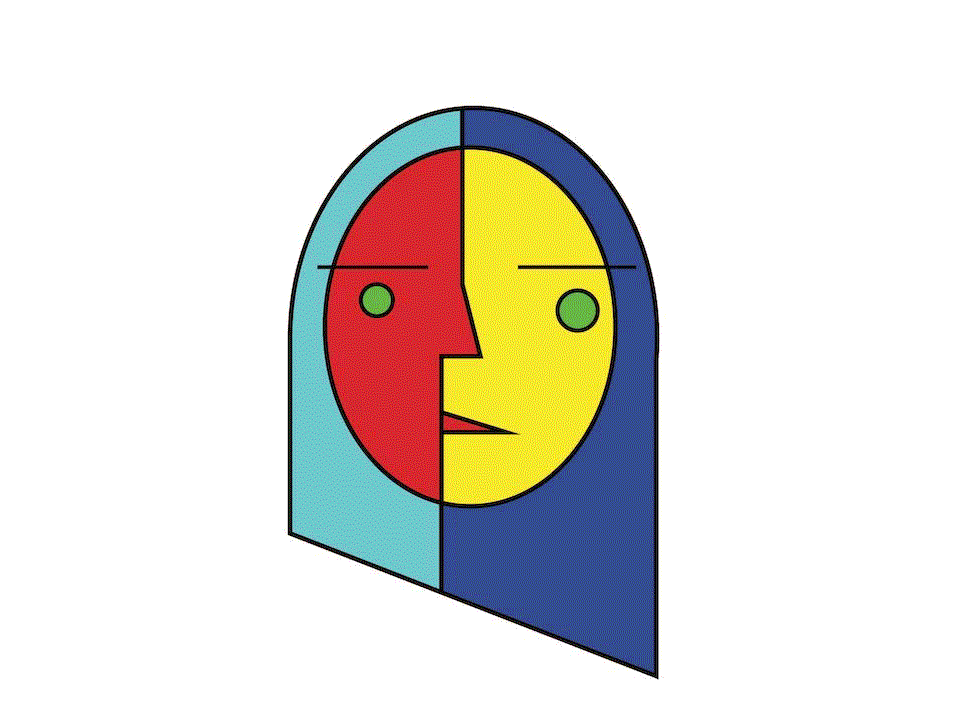
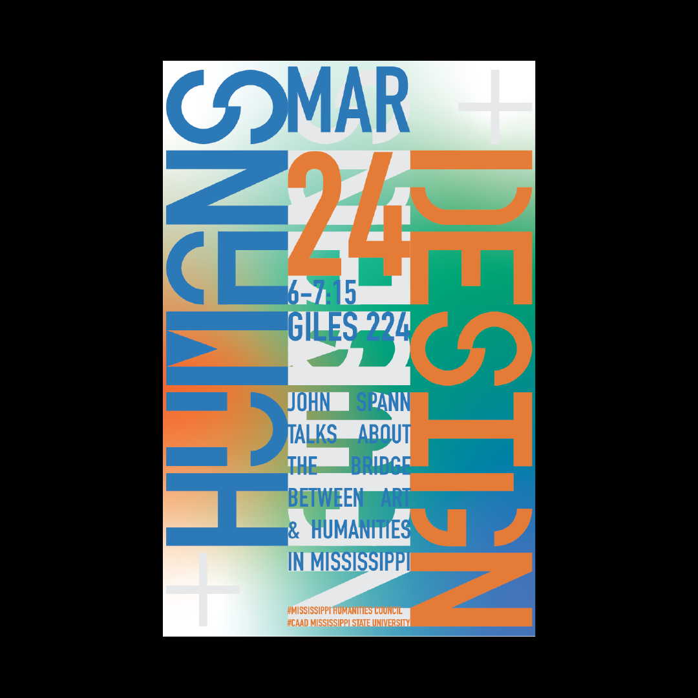
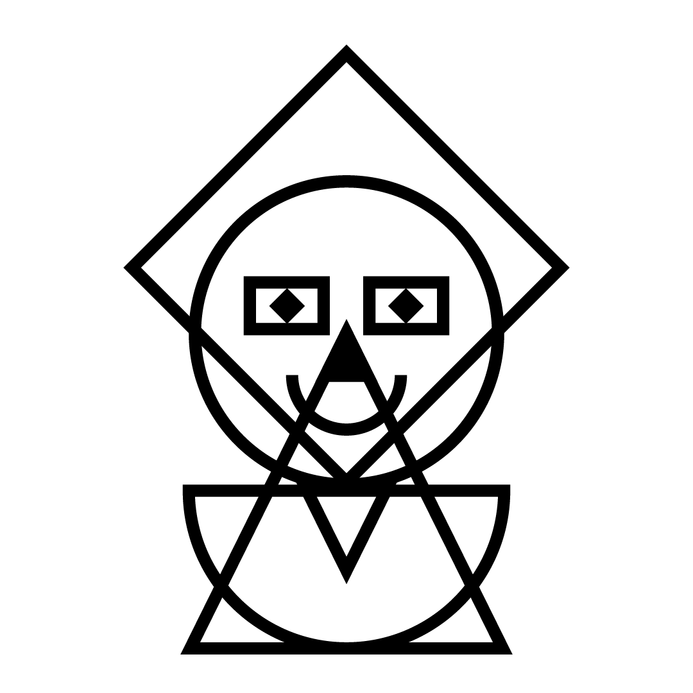

CURRENT TOPICS
MISCH DESIGN HISTORY NARRATIVES / RESEARCH TOPIC INSPIRED
This week, and for the rest of the semester, I will be featuring a series of bite size design stories to help guid you in your research processes. Each video or piece of material that we review is inspired by one or more of your chosen research topics.
MATERIAL FOR 04.28.22:
JENNY HOLZER NAM JUNE PAIK TED DAVIS ANDY WARHOL DIGITAL ART MORESHIN ALLAHYARI KIEL D. MUTCHELKNAUS SPACE TYPE GENERATOR REDACTION.US
FINAL PAPER MATERIAL
BASIC TIMELINE:
04.05.22 - INTRODUCTION TO PROJECT
04.12.22 - FIRST DRAFT TOPICS DUE (CANVAS DISCUSSION)
04.29.22 - FINAL TOPIC AND ABSTRACTS DUE
05.03.22 - FIRST DRAFT PAPER DUE
05.11.22 - SUBMIT FINAL DRAFT PAPERS
NEXT STEPS (BY END OF WEEK):
Your goal this week is to write your abstract. Your abstract should be 250 - 500 words, following the guidelines lain out in the final paper brief. Submit this document as a Microsoft Word Doc to the main Canvas assignment by the end of the week.
RESOURCES:
JSTOR DHS MEMORY FULL 2021 DHS / DESIGN HISTORY SOCIETY WRITING AN ABSTRACT MSU WRITING CENTER*more to come!*
UPCOMING TOPICS
SPECIAL TOPICS LECTURES: MISC RESEARCH TOPIC INSPIRED DESIGN STORIES
FINAL RESEARCH PAPER IN-CLASS SUPPORT SESSIONS
TOPICS ARCHIVE
MATERIAL FOR 04.26.22:
WUBI EFFECT BAUHAUS WOMEN 01 BAUHAUS WOMEN 02 SYLVIA HARRIS 01 SYLVIA HARRIS 02 SYLVIA HARRIS 03 GAIL ANDERSON SIN OF IMMORAL IMBALANCE / UCDA DESIGN AND PUNK 01 DESIGN AND PUNK 02 RAYMOND PETTIBON / PUNK ARTIST
MATERIAL FOR 04.21.22:
BLACK EXPERIENCE IN DESIGN Nkyinkyim Installation BAUHAUS AND POLITICS ART IN ACTION / AMOS KENNEDY OBJECTS OF DESIRE / SURREALISM DESIGN / VITRA 99PI / ARTICLES / VISUALS
MATERIAL FOR 04.19.22:
VIRGIL ABLOH ROAD SIGNS / VOX + 99PI DANGER SYMBOLS / VOX + 99PI NATURE AS DESIGN / VOX + 99PI BLUE NOTE RECORDS ALBUM COVERS / VOX GEORGE OLDEN / I'VE GOT A SECRET ACCESSIBLE ICON PROJECT ICON FOR ACCESS / 99PI ISO SYMBOL INDEX
GRAPHIC DESIGN: A NEW HISTORY / CHAPTER 09
Chapter 09 focuses on postmodernism in design. Postmodern literally means "after modern" which speaks both to the movements chronological timeline but also its borrowing from styles from previous "modern" art and design movements. Postmodernism is also considered the return of expressionism. After years of design surrounded by war, and the attempt to depoliticize design in many ways, the era of postmodernism shows a revival in artistic and individual expression, social awareness and reaction, and outspoken progressive (and political or ani-political) ideas in the scope of design and art. The postmodern era also introduced an array of new tools, mediums, and processes for design, most namely, the computer.
REQUIRED READING / MATERIAL:
GRAPHIC DESIGN: A NEW HISTORY / CHAPTER 09
GRAPHIC DESIGN: A NEW HISTORY / CHAPTER 08
Chapter 08 outlines the birth and expansion of the International Style (Swiss Style). Born out of Swizterland, primarily Basel and Zurich, the International style aimed to depoliticize design, and became a sort of template for signage, public space design, and large corporate identity. Although there are many schools of thought under the International style, all respond to the reduction of form, and a greater focus on pure graphic form that can communicate a specific message across multiple barriers.
REQUIRED READING / MATERIAL:
GRAPHIC DESIGN: A NEW HISTORY / CHAPTER 08
GRAPHIC DESIGN: A NEW HISTORY / CHAPTER 07
In this chapter, we will exmamine graphic design (visual communication) in American pre-WWII, and the return of war propoganda in Europe and beyond surrounding the conflict of WWII. Some key principle to note during this chapter, are the importance of the magazine as medium and vehicle for visual communication (in American advertising and graphic design), and the more prominent support and acceptance of anti-war propoganda across the board (in contrast to WWI).
REQUIRED READING / MATERIAL:
GRAPHIC DESIGN: A NEW HISTORY / CHAPTER 07
GRAPHIC DESIGN: A NEW HISTORY / CHAPTER 06 / BAUHAUS
This week we will finish our examination and discussion of the Bauhaus, with a specific focus on elements of Bauhaus Typography, or The New Typography as it has been historically noted.
RESPONSE TOPIC
Identify via the textbook and your own research typefaces that originated from the Bauhaus school.
Through your own research, in digital spaces and beyond, find a contemporary example of design that makes use of a Bauhaus typeface. Does it hold up to the standards and philosophies of the Bauhaus? Why or why not?
Submit your findings as images and a half page written response to the Canvas assignment. Refer to the Canvas assignment for further info and details.
REQUIRED READING / MATERIAL:
GRAPHIC DESIGN: A NEW HISTORY / CHAPTER 06
THE CABINET OF DR.CALIGARI
GUEST TALK / JOHN SPANN / ART & DESIGN + HUMANITIES
John Spann from the Mississippi Humanities Council will join us this week to give a talk on the intersection between art & design and humanitites, as well as share some projects that the MHC has supported in Mississippi.
On March 08, we will watch a documentary on the Bauhaus (Bauhuas 100 by BBC), and continue our lectures from the textbook Chapter 06 when we return from Spring Break.
NO RESPONSE THIS WEEK! / ONLY A DISCUSSION
What does is mean to bridge the gap between design and humanities? Can you identify projects that do so?

REQUIRED READING / MATERIAL:
MHC
GRAPHIC DESIGN: A NEW HISTORY / CHAPTERS 06 / PART 01
This week will examine chapter 06, which focuses on the Baushaus School and The New Typography that came out of the Bauhaus. The Bauhaus is one of the most influential movements for design, graphic and archtictural alike. It is vital to understand the growth of the practice of design moving forward, and housed some of the most prominent figures in all of the history of design.
On March 08, we will watch a documentary on the Bauhaus (Bauhuas 100 by BBC), and continue our lectures from the textbook Chapter 06 when we return from Spring Break.
RESPONSE PROMPT (WEEK 7 / MARCH 8 - 10) / BAUHAUS SELFIES:
Consider the basic identifying forms of the Bauhaus style (circle, square, triangle).
Using these shapes as the primary forms, create a "abstract" Bauhaus style self portrait of yourself.
Upload your outputs (can be more than one) to the Canvas assignment in .jpeg or .png format.
No written response element is required, but I will call on you to discuss and inform us on your findings in class.

REQUIRED READING / RESPONSE MATERIAL:
GRAPHIC DESIGN: A NEW HISTORY / CHAPTERS 06
VIDEO DOC:
BAUHAUS 100 / DOCUMENTARYGRAPHIC DESIGN: A NEW HISTORY / CHAPTERS 05
This week will examine chapter 05, which highlights revolutions (political, social, visual) in design, specifically that of the Dutch De Stijl ("the style") and Russian Constructivism.
RESPONSE PROMPT:
Consider the movements of De Stijl and Russian Constructivism.
Conduct your own image research on the figures and ideologies mentioned in Chapter 05 (use Artsor or beyond), and share 2-4 images not found in the text book that we can look at together in class on Thursday.
Include citations to the images in .pdf format.
No written response element is required, but I will call on you to discuss and inform us on your findings in class.
REQUIRED READING / RESPONSE MATERIAL:
GRAPHIC DESIGN: A NEW HISTORY / CHAPTERS 05
RESOURCES FOR DISCUSSION:
CALL FOR POSTERS / SUPPORT UKRAINE WAR IN UKRAINE / UKRAINE.UA GRAPHIC DESIGN IN UKRAINE / 4TH BLOCK SUPPORT UKRAINE / NPR SUPPORT UKRAINE / WASHINGTON POST EVELINA HALLEN / HOW WILL WE BE REMEMBERED? SUNFLOWERS AND UKRAINE / WASHINGTON POSTGRAPHIC DESIGN: A NEW HISTORY / CHAPTERS 04
This week will examine chapter 04, which highlights the influence of Modern Art, and movements such as Cubism, Futurism, and Purism, on the practice of design, most specifically in post WWI Europe.
NO RESPONSE THIS WEEK!
REQUIRED READING / RESPONSE MATERIAL:
GRAPHIC DESIGN: A NEW HISTORY / CHAPTERS 04
GRAPHIC DESIGN: A NEW HISTORY / CHAPTERS 2 - 3
This week will examine the ends of the Art Nouveau movement, and move into design during the First World War and the Dada movement.
RESPONSE PROMPT / IMAGE RESEARCH + WRITTEN RESPONSE (HALF PAGE)
Focusing on Chapter 3, explore the chapter and select 1 - 2 designers that stand out to you based on their work or your reading. In your own words, write a half page response to this figure and describe who they are, and what their historical significance is. In addition, find 3-4 additional images (not shown in the textbook) of their work using ARTSOR. Cite these images in your written response document and upload these images alongside your written response (or formatted inside of the .pdf)
REQUIRED READING / RESPONSE MATERIA:
GRAPHIC DESIGN: A NEW HISTORY / CHAPTER 3
GRAPHIC DESIGN: A NEW HISTORY / INTRO + CHAPTER 01 - 02
This week will examine selected sequences and images from the textbook Introduction, and Chapters 1 & 2. As there is lots of material to get through, we will examine Chapter 2 prior to our discussion on Thursday.
RESONSE PRMOPT / DISCUSSION TOPIC (WRITTEN RESPONSE):
Select an image and a corresponding sequence of text from the text book. Write a one-page written response to this image and its history.
What is the historical significance of this image? Who designed it? Why was it designed? What were the tools and processes used in the design?
Follow the written response guidelines as outlined in the syllabus.
REQUIRED READING / MATERIAL:
Graphic Design: A New History / Introduction + Chapters 1-2
BLACK (DESIGN?) HISTORY MONTH
Like most areas of history in America, there are countless numbers of important figures who have been left out of the mainstream discourse. It is important that we, as modern contributors to the narrative of design history, take a retrospective look at these figures and influences that have otherwise been ignored, or unknown.
We will examine a selection of African American designers who have left a strong impression and addition to the history of design, focusing on the graphic impact and quality of their work.
RESONSE PRMOPT / DISCUSSION TOPIC (WRITTEN RESPONSE):
Select a designer from the required reading (linked below), and write a one page response to their work. What is compelling about their work to you? What mediums, tools, processes are they working with? Can you find a modern reference of design that reflects design principles in their work?
Include image and additional research references in your .pdf submission to Canvas.
Follow the written response guidelines as outlined in the syllabus.
REQUIRED READING / MATERIAL:
AFRICAN AMERICAN DESIGNERS PT 1 AFRICAN AMERICAN DESIGNERS PT 2ADDITIONAL RESOURCES:
DESIGN AND CIVIL RIGHTS MOVEMENT WHERE ARE THE BLACK DESIGNERS?THECHNOLOGY OF DESIGN (THE TOOLS OF DESIGN)
Like most movements in human hsitory, much of the practice of graphic design was informed by advancements in technology. So, when did graphic design begin? From cave paintings to the computer, we will examine how tools and technology has informed and changed the history of graphic design with a focus on printing methods and the use of printer's marks.
RESONSE PRMOPT (SPECIAL CASE RESPONSE):
The act of printmaking is rooted in art and design history, and today remains to be one of the most steadfast methods of design, one that gave birth to its own aestheticisim. Following the special case response brief, we will be making our very own prints using some less-than modern tools...potatoes!
Potato print summary:
1. purchase a potato of your choosing (sweet, Idaho, golden, you pick! Just get one that is large enough to carve and print).
2. purchase 1-3 colors of acrylic paint or India Ink.
3. cut the potato so that there are square edges and one large flat surface.
4. create a "printers mark" from your initials, or make a pattern to be tiled, and carve this mark into the potato.
5. ink it up, print (On 8.5 x 11" sheets of paper), repeat!
6. Photograph or scan your favorite print, and upload this print to the Canvas assignment as a .jpg
REQUIRED READING / MATERIAL
Explore at least 3 of the following resources:
POTATO PRINTING RESOURCES:
POTATO PRINTING IN POLAND POTATO PRINTING / GUARDIANTHE PLIMSOLL LINE (DESIGN SAVES LIVES)
In the early 1900s, overloaded merchant ships and overzealous ship-owners were causing the deaths of countless amounts of sailors. Would you believe that a bit of paint, a line, and a circle saved the day?
RESPONSE PROMPT (WRITTEN RESPONSE / HALF PAGE):
What is an impact that (graphic) design has had on your life? Is it positive, negative? What is it about this particular design that was so impactful? Form, function, concept, visuals, etc..?
Consider this topic, as well as the material we have reviewed, and create a written response following the guidelines in the course syllabus.
REQUIRED READING / LISTENING:
99PI / A CHEER FOR SAMUEL PLIMSOLL